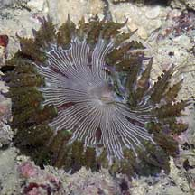
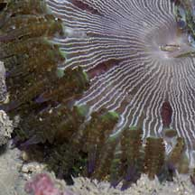
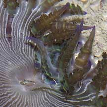
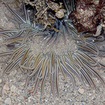
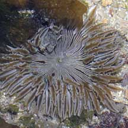
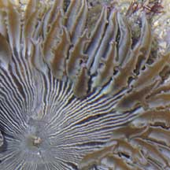

|
|
| sea anemones text index | photo index |
| Phylum Cnidaria > Class Anthozoa > Subclass Zoantharia/Hexacorallia > Order Actiniaria > Genus Phymanthus |
| Purple-tip
frilly anemone Phymanthus sp.* Family Phymantidae updated Nov 2019 Where seen? This dark frilly anemone is seen on many of our Southern shores. Usually among coral rubble. Features: Diameter with tentacles extended 8-12cm. Tentacles with many fine 'branches'. Generally all the tentacles and 'branches' are same colour usually brown, greenish or greyish with violet tips. Oral disk pale or white when contracted, when expanded it is dark with fine white lines radiating from the mouth. |
 Sisters Islands, Jan 06 |
 Fine white lines radiating from the mouth. |
 Purple or violet tips. |
*Species are difficult to positively identify without close examination.
On this website, they are grouped by external features for convenience of display
| Purple-tip frilly anemones on Singapore shores |
On wildsingapore
flickr
|
| Other sightings on Singapore shores |
 Terumbu Hantu, Jul 18 Photo shared by Dayna Cheah on facebook. |
 Pulau Biola, Dec 09  |